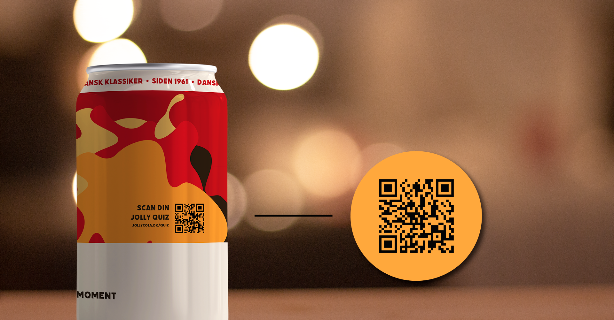
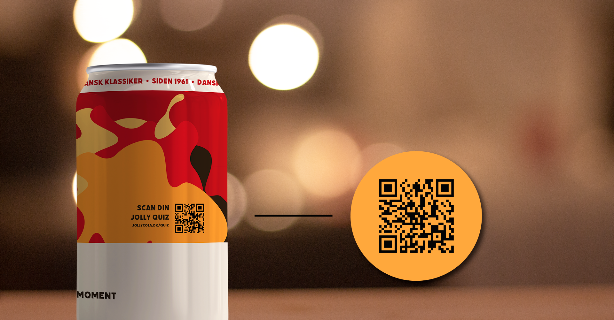

1959
Den 1. juli 1959 blev starten for Jolly Cola. 18 forskellige danske bryggerier og mineralvandsfabrikker var gået sammen og dannede Dansk Coladrik A/S, som i sin tid var et modsvar fra Danmark på den amerikanske Coca Cola.
1960
"Sig Jolly til din Cola"
I 1960’erne fik Jolly Cola sit første slogan og blev også en stor del i det danske colamarked. Desuden blev der lavet den første reklamefilm, som senere også blev vist i biograferne.
1960
Som det første læskemærke drik i Danmark, blev bagside-etikkerne på Jolly Cola glasflaskerne nu aftagelige. De indeholdte vigtigt viden - eller ligegyldigt info som nogle også vil sige i dag.
1980
hejsa
I 1980’erne og 90’erne blev Jolly colas aftagelige bagside-etikker blandt en masse fans et hit. Da de både indebar quizzer, kryds og tværs, samt andre kloge ordsprog og vittigheder fra befolkningen.
1981
I 1981 fik Jolly Cola et nyt ydre. Ligeledes i årtierne efter fik Jolly opfrisket sit udseende, men stadig med den samme forfriskende cola-drik indeni.

1997
hejsa
Det var Carlsberg som havde aktiemajoriteten i Dansk Coladrik A/S og dermed også Jolly indtil 1997, hvor de solgte den til Albani. Året efter kom der en sponsoraftale, som medførte at Albina senere lagde Jolly Cola på hylden.
2003
I 2003 relancere Vestfyen Jolly Colaen. Endelig i september fik bryggeriet Vestfyen over halvdelen af aktierne i Jolly Cola.
2009
"50 års jubilæum"
Jolly Cola fylder 50 år, som fejres med et stort 50-års jubilæum. Hvor Jolly boblen kører rundt til de danske byer.
2014
Bryggeriet Vestfyen relancerede Jolly Cola med et nyt flaskedesign, i samarbejde med Jim Lyngvild. Her vendte man i en periode tilbage til en tidligere etiket, for at give mærket et retro look.
2019
"60 års jubilæum"
I 2019 fylder Jolly Cola 60 år.
2021
Bryggeriet Vestfyen relancerede Jolly Cola med et nyt flaskedesign, i samarbejde med Jim Lyngvild. Her vendte man i en periode tilbage til en tidligere etiket, for at give mærket et retro look.